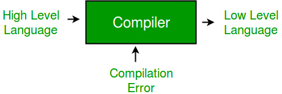

Compiler is a software which converts a program written in high level language (Source Language) to low level language (Object/Target/Machine Language).

- Cross Compiler that runs on a machine ‘A’ and produces a code for another machine ‘B’. It is capable of creating code for a platform other than the one on which the compiler is running.
- Source-to-source Compiler or transcompiler or transpiler is a compiler that translates source code written in one programming language into source code of another programming language.
Language processing systems (using Compiler) –
We know a computer is a logical assembly of Software and Hardware. The hardware knows a language, that is hard for us to grasp, consequently we tend to write programs in high-level language, that is much less complicated for us to comprehend and maintain in thoughts. Now these programs go through a series of transformation so that they can readily be used machines. This is where language procedure systems come handy.

- High Level Language – If a program contains #define or #include directives such as #include or #define it is called HLL. They are closer to humans but far from machines. These (#) tags are called pre-processor directives. They direct the pre-processor about what to do.
- Pre-Processor – The pre-processor removes all the #include directives by including the files called file inclusion and all the #define directives using macro expansion. It performs file inclusion, augmentation, macro-processing etc.
- Assembly Language – Its neither in binary form nor high level. It is an intermediate state that is combination of machine instructions and some other useful data needed for execution.
- Assembler – For every platform (Hardware + OS) we will have a assembler. They are not universal since for each platform we have one. The output of assembler is called object file. Its translates assembly language to machine code.
- Interpreter – An interpreter converts high level language into low level machine language, just like a compiler. But they are different in the way the read the input. The Compiler in on go reads the inputs, does the processing and executes the source code whereas the assembler does the same line by line. Interpreted programs are usually slower with respect to compiled ones.
- Relocatable Machine Code – It can be loaded at any point and can be run. The address within the program will be in such a way that it will cooperate for the program movement.
- Loader/Linker – It converts the relocatable code into absolute code and tries to run the program resulting in a running program or an error message (or sometimes both can happen). Linker loads variety of object files into a single file to make it executable. Then loader loads it in memory and executes it.
Phases of a Compiler –
There are two major phases of compilation, which in turn have many parts. Each of them are take input from the output of the previous level and work in a coordinated way.

Analysis Phase – An intermediate representation is created from the give source code :
- Lexical Analyzer
- Syntax Analyzer
- Semantic Analyzer
Lexical analyzer divides the program into “tokens”, Syntax analyzer recognizes “sentences” in the program using syntax of language and Semantic analyzer checks static semantics of each construct.
Synthesis Phase – Equivalent target program is created from the intermediate representation. It has three parts :
- Intermediate Code Generator
- Code Optimizer
- Code Generator
Intermediate Code Generator generates “abstract” code, Code Optimizer optimizes the abstract code, and final Code Generator translates abstract intermediate code into specific machine instructions.
GATE CS Corner Questions
Practicing the following questions will help you test your knowledge. All questions have been asked in GATE in previous years or in GATE Mock Tests. It is highly recommended that you practice them.
- GATE CS 2011, Question 1
- GATE CS 2011, Question 19
- GATE CS 2009, Question 17
- GATE CS 1998, Question 27
- GATE CS 2008, Question 85
- GATE CS 1997, Question 8
- GATE CS 2014 (Set 3), Question 65
- GATE CS 2015 (Set 2), Question 29
References –
Introduction to compiling – viden.io
slideshare